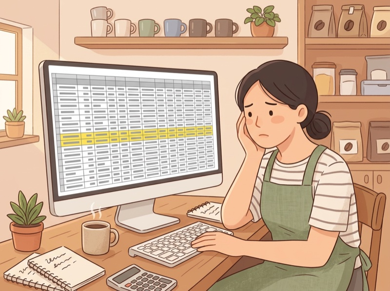
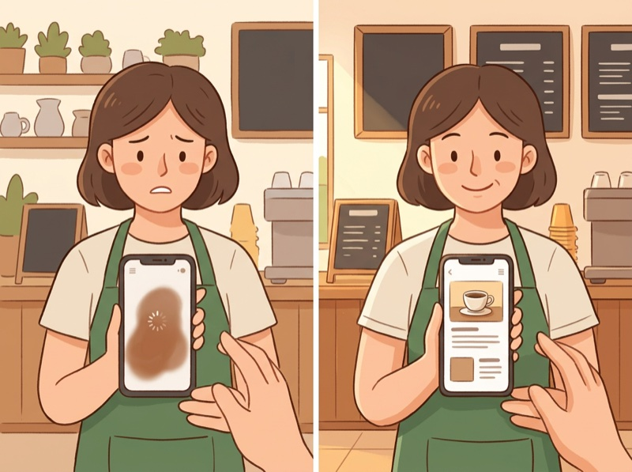

📱 スマホで開く
教室の画面を見ながら、自分のスマートフォンで、このページを開けます。スマートフォンのカメラで、このQRコードを読み取ってください。QRコードを押すと、大きく表示されます。
スマートフォンでも、ブラウザの翻訳が使えます。ゲームも、スマートフォンで遊べます。
🎮 用語シューティング（1人用のゲーム）
画面に出る「意味」に合う用語の的を撃つゲームです。授業の中で2回（ステージ1・ステージ2）遊びます。点数は記録されません。試験の点数とも関係なく、用語を覚えるための練習です。ゲームの画面も、ブラウザの翻訳で意味を母語にできます（用語は日本語のまま表示されます）。音は初めは出ません。
→ ゲームを開くこの回のゴール
- OSが何をするものかを説明できる。仮想記憶・絶対パス・相対パスの意味を言える。表計算で、相対参照と絶対参照（$）の違いが分かる
- OSSの特徴（ソースコードの公開・再配布の自由・無保証）を言える
- 情報デザインの四つの原則（近接・整列・反復・対比）と、ユニバーサルデザインの考え方を、例で言える
- データベースの主キー・外部キー・インデックス・トランザクションが何かを説明できる。可逆圧縮と非可逆圧縮の違いを言える
- 過去問（令和7年度）の5問を、問い方の型を使って解く。ミニ模試（10問・約12分）で、本番の「1問約1.2分」の感覚をつかむ
授業の流れ
2コマ連続（90分 + 90分 = 計180分）。休憩10分は授業時間に含めません。🎮のブロックは、ゲームで遊ぶ時間です。
前回の復習テスト → 名簿とメニューのストーリー → 今日の地図 → OS（テクノロジ系：ソフトウェア 教科書 p.276-）
前回の復習テスト（約10分：テスト約5分＋解説の確認約5分）
前回（第8回）の内容を、1週間たって、どれだけ覚えているかを確かめる5問（約5分）。前回の確認テストは、どの問題も正答率が高かった。そのため、稼働率・並列・フェールセーフなどを、数字や聞き方を変えて出している。損益分岐点も1問入れている（前々回の内容）。点数を競うものではない。覚えていることと、忘れていることを、自分で知るためのテスト。送信すると、点数と、正解・解説が表示される。そのあと、間違えた問題の解説を読む。分からないところは、隣の人か先生に聞く。
今日のストーリー：名簿とメニューを、整える（約8分）
駅前のカフェを開いたAさん（架空の話）は、前回、レジが止まる夜を乗り越えた。今回は、お店の「毎日の仕事」を、パソコンで楽にしたい。ところが、小さな困りごとが、次々に出てくる。
- 1. パソコンの更新と、ファイルが見つからない朝、パソコンが更新で再起動した。昨日の売上のファイルが、どこにあるか分からない。パソコンを動かす基本のソフト（OS）と、ファイルの整理（ファイル管理）の話。

2. 名簿が、数千行になったお客さんのポイントカードの名簿を、表計算で管理してきた。行が増えて、同じお客さんが2回入っていて、探すのも大変。表計算と、データベースの話。- 3. メニューが、読みにくい文字が小さい。日本語が読めないお客さんもいる。絵のマークで伝えたらどうか。情報デザインとユニバーサルデザインの話。

4. ホームページの写真が、重い写真を載せたら、スマートフォンで開くのが遅い。写真を小さくする圧縮の話。
1は1限前半・1限後半、2〜4は1限後半と2限前半で学ぶ。順番に、Aさんの困りごとを解決していく。
今日の地図（約4分）
OSから、データの活用まで
① OS：パソコンを動かす基本のソフト（約18分、教科書 p.276-）
パソコンやスマートフォンには、キーボードや画面などのハードウェアと、表計算やブラウザなどのアプリケーションソフトウェアがある。この2つの間に入って、ハードウェアを管理し、アプリが動けるようにするのが、OS（Operating System、基本ソフトウェア）。IPAのシラバスは、OSの必要性を、利用者やアプリに、ハードウェアやソフトウェアの資源を効率的に提供するための制御・管理の機能をもつこと、と説明している（確認日：2026-11-25）。
OSの位置：ハードウェアとアプリの間
| OSの機能（シラバスの書き方） | どんな仕事か（やさしい言い換え） | Aさんのお店でたとえると |
|---|---|---|
| ユーザー管理 | 使う人の登録（アカウント）と、使える範囲（アクセス権）の管理 | 店長はレジの設定を変えられるが、アルバイトは売上を見るだけ |
| ファイル管理 | ファイルの保存場所と、読み書きの管理 | 売上のファイルを、フォルダに整理して、探せるようにする |
| 入出力管理 | キーボード・画面・プリンタなどとのやり取りの管理 | レシートを、プリンタに出す |
| 資源管理 | 主記憶などの使い方の管理（仮想記憶など） | 同時に動く複数のアプリに、主記憶を上手に分ける |
表の「たとえ」は、この教材の説明用。シラバスの用語例・活用例には、「ユーザーIDの登録・抹消の管理」「ユーザー別のアクセス権の管理」「仮想記憶」がある。
OSの種類：シラバスは、Windows・Mac OS・Chrome OS・UNIX・Linux・iOS・Androidなど、複数の種類があることを挙げている。OSが違うと、同じアプリが動かなかったり、ファイルの形式が合わなかったりする。シラバスは、「異種のOS間でデータのやり取りを行う際に生じる問題」も範囲に入れている。
仮想記憶（かそうきおく）：主記憶より大きく使う工夫。プログラムは、主記憶（第7回）の上で動く。ところが、同時に動かすアプリが増えると、主記憶が足りなくなる。そこでOSは、補助記憶（HDD・SSD）の一部も使って、主記憶の物理的な容量に制約されない、論理的な（見かけの）アドレス空間を、プログラムに用意する。これが仮想記憶。次の過去問は、この言葉を問う。
【例題①】問62 OSの仮想記憶方式に関する次の記述中のa～cに入れる字句の適切な組合せはどれか。
プログラムの実行時に，コンピュータのa装置のbな容量に制約されない，cなアドレス空間を提供する。
出典：令和7年度 ITパスポート試験 公開問題 問62（テクノロジ系。問題文・選択肢は原文のまま。表は、見やすいように、1行ずつに書き直した）
自分で選んだあとに、答えと解説を見る
正解：ア（型：空欄の言葉を、意味でつなぐ。「制約されない」の前に来るのは、実際の大きさ＝物理的）。仮想記憶は、主記憶の物理的な容量（実際の大きさ）に制約されない、論理的（見かけ）なアドレス空間をつくる。「物理的」は実際の機械の大きさ、「論理的」はOSが見せる見かけの大きさ、と覚える。
ファイル管理 → 表計算 → OSS → 情報デザイン → 🎮ゲーム①（テクノロジ系：ソフトウェア・情報デザイン 教科書 p.276-）
① ファイル管理とバックアップ（約10分）
Aさんの困りごと1の続き。昨日の売上のファイルが見つからないのは、ファイルをフォルダ（ディレクトリ）に整理していなかったから。フォルダは、木の枝のように、入れ子になっている。いちばん上のフォルダをルートディレクトリ、いま開いているフォルダをカレントディレクトリと呼ぶ（シラバスの用語例）。
フォルダの木と、絶対パス・相対パス
ファイル管理には、ほかにも、複数の人が同じファイルを使うファイル共有と、「誰が読める・書ける」を決めるアクセス権設定がある（シラバスの活用例）。ファイルの保存を繰り返すと、1つのファイルがディスクの中で細かく分かれて置かれることがある。これをフラグメンテーションという（シラバスの用語例）。
バックアップ：誤操作や故障で、ファイルが壊れたときのために、写しを別の場所に保存しておくこと。何日分の写しを残すかを決める世代管理という考え方がある（例：今日・昨日・先週の3つを残す）。長く保管するために、まとめて保存することはアーカイブ（シラバスの用語例）。バックアップの写しも、元のファイルと同じ場所に置くと、一緒に壊れることがある。別の場所に置く。
② 表計算（約15分、教科書 p.276-）
Aさんは、お客さんの名簿や、毎日の売上を、表計算ソフトで管理している。シラバスは、表計算の基本機能として、セルの参照・四則演算の指定・代表的な関数・データの並べ替えや検索・グラフの作成・ピボットテーブルの利用を、活用例に挙げている。
試験で特に出るのが、式をコピー（複写）したとき、セルの参照が、どう動くか。
| 書き方 | 名前 | コピーすると |
|---|---|---|
| B4 | 相対参照 | コピー先に合わせて、ずれる（下にコピーすると、B5、B6…） |
| B$1 | 行を固定（複合参照） | 行（1）は動かない。列だけずれる |
| $B$1 | 絶対参照 | 行も列も動かない。いつも、B1を指す |
「$」は、「ここは固定する」の印。この表の名前や言い方は、この教材の説明用（シラバスの活用例は「セルの参照やセルへの代入」とだけ書いている）。
例：Aさんは、税抜価格の表から、税込価格を計算したい。消費税率は、セルB1に1つだけ書いてあり、どの商品の計算でも、同じB1を使いたい。
| セル | 商品名 | 税抜価格（B列） | C列に入れる式 |
|---|---|---|---|
| 4行目 | 商品X | 200 | =B4*(1+B$1) |
| 5行目 | 商品Y | 500 | =B5*(1+B$1) |
| 6行目 | 商品Z | 100 | =B6*(1+B$1) |
C4の式を、C5・C6にコピーすると、B4は、B5・B6にずれる（税抜価格は、行ごとに変わってほしい）。B$1は、行が固定なので、B1のまま動かない（税率は、いつも同じセルを使いたい）。次の過去問は、この形。
【例題②】問76 商品の税込価格を計算する表計算のワークシートがある。セルB1には消費税率が入力されており，セルB4～B6には税抜価格が入力されている。セルC4～C6に税込価格を表示するために，セルC4に式を入力し，セルC5，C6に複写する。セルC4に入力する式はどれか。ここで，セルB1は，パーセント形式で表示している。（表：B1＝10%。B4＝商品X 200円，B5＝商品Y 500円，B6＝商品Z 100円）
出典：令和7年度 ITパスポート試験 公開問題 問76（テクノロジ系。問題文・選択肢は原文のまま。ワークシートの図は、文字で書き直した）
自分で選んだあとに、答えと解説を見る
正解：ウ（型：コピーしたとき、動いてほしいものと、動いてほしくないものに分ける）。税抜価格（B4）は、C5のときB5、C6のときB6と、ずれてほしいので、$を付けない。税率（B1）は、どの行でもB1のままにしたいので、行を固定するB$1にする。アは、B$4で、税抜価格も固定されてしまう。イ・エは、B1に$がなく、C5にコピーするとB2にずれてしまう。
③ OSS：ソースコードが公開されているソフト（約5分）
Aさんは、お店のパソコンで、お金をかけずに使えるソフトを探している。OSS（Open Source Software）は、設計図にあたるソースコードが公開されていて、決められた条件のもとで、自由に使い、直し、配れるソフト。IPAのシラバスは、OSSの特徴を、次のように挙げている（確認日：2026-11-25）。
ソースコードの公開
設計図（ソースコード）を、誰でも見られる。
再配布の制限の禁止
配ることを、制限してはいけない。
無保証の原則
品質などを保証しないのが原則。
OSSの種類は、OS（例：Linux）・通信系・オフィス系・データベース管理システム・応用ソフトウェアなど、いろいろ（シラバス）。ただし、無料とは限らない。OSSごとにライセンス（利用許諾条件）が決まっていて、使う前に確認する。ライセンスの代表として、シラバスはGPL（GNU General Public License）とコピーレフトを用語例に挙げている。コピーレフトは、一般に、改造したものも、同じ自由な条件で配ることを求める考え方。細かい違いは、今日は扱わない。
④ 情報デザインとユニバーサルデザイン：伝わるように、整える（約10分、教科書 p.276-）
Aさんの困りごと3。メニュー表の文字が小さく、情報がごちゃごちゃで、読みにくい。情報デザインは、情報を分かりやすく整理して、正確に伝えるための考え方と方法。シラバスは、デザインの原則として近接・整列・反復・対比の4つを用語例に挙げている。
デザインの四つの原則（メニュー表で考える）
近接
関連するものを、近づけてグループにする。
整列
決めたルールで、そろえて置く。
反復
同じ種類には、同じデザインを繰り返す。
対比
大きさや強さの違いをはっきりさせる。
【例題③】問72 見る人に意図が伝わりやすいデザインにするための四つの原則に関する次の記述中のa，bに入れる字句の適切な組合せはどれか。
〔四つの原則〕
近接：互いに関連する要素は近づけてグループにする。
a：要素を意図したルールに基づき配置する。
反復：要素ごとにデザインルールを繰り返す。
b：要素ごとの大小や強弱などの違いを明確にする。
出典：令和7年度 ITパスポート試験 公開問題 問72（テクノロジ系。問題文・選択肢は原文のまま。表は、見やすいように、1行ずつに書き直した）
自分で選んだあとに、答えと解説を見る
正解：イ（型：四つの原則の名前を、説明から思い出す）。aは「ルールに基づいて配置する」＝整列。bは「大小や強弱の違いを明確にする」＝対比。「操作」と「価値」は、四つの原則にない言葉。
シラバスは、ほかに、情報の整理の軸を表すLATCHの法則（Location＝場所、Alphabet＝五十音やアルファベット順、Time＝時間、Category＝分類、Hierarchy＝階層・大きさの順）、操作のしかたを伝える手がかりのシグニファイア（例：押せそうに見えるボタンの形）、使う人の体験全体を考えるUXデザインも、用語例に挙げている。今日は、名前と、おおまかな意味だけ。
ユニバーサルデザイン：できるだけ多くの人に。もう一つ、Aさんの困りごと3の続き。日本語が読めないお客さんも、年配のお客さんも、同じメニューで困らないようにしたい。ユニバーサルデザインは、年齢や文化、障害の有無や能力の違いなどにかかわらず、できるだけ多くの人が快適に使えることを目指す考え方（シラバス）。用語例は3つ。アクセシビリティ（誰でも使える・読める度合い）、ピクトグラム（絵で意味を伝える記号。例：非常口のマーク）、インフォグラフィック（情報を図やグラフで見せる表現）。Aさんのメニューには、飲み物の絵のマークと、大きめの文字を足す。
🎮 ゲーム①：用語シューティング ステージ1（約10分）
ここまでに出た用語（OS・仮想記憶・絶対パス・OSS・情報デザイン・ユニバーサルデザイン・ピクトグラム）を、ゲームで確かめる。画面の「意味」を読んで、合う用語の的を撃つ。点数は記録されない。最初は音が出ない。間違えた用語は、最後の画面に一覧が出る。
進め方：1回は約2分。目標は「ランクA以上」（7問中6問以上）。終わったら、間違えた用語の一覧を、下の用語カードで確かめて、もう一度遊ぶ。ページを開くと、「スタート」ボタンが出る。翻訳を使う人は、翻訳してから押す。
→ ステージ1を始める標準化 → データベース → DBMS → データ活用 → 情報メディアと圧縮 → 🎮ゲーム②（テクノロジ系 p.276-313、ストラテジ系 p.028-032・p.060-063）
① 標準化：みんなが同じ決まりを使う（約5分、教科書 p.060-063）
メニューの絵のマーク（ピクトグラム）は、お店ごとに違う絵だと、かえって分からない。USBの形も、QRコードも、同じ決まりがあるから、どの機器でも使える。このような決まりを、みんなでそろえることを標準化という。シラバスは、標準化の意義を、互換性の確保などのために、ISOやIECといった標準化団体や業界団体が標準化を行っていること、と説明している（確認日：2026-11-25）。
| 用語 | おおまかな意味（やさしい言い換え） |
|---|---|
| デファクトスタンダード | 市場で広く使われて、事実上の標準になったもの |
| デジュレスタンダード | 公的な機関が、正式に決めた標準 |
| フォーラム標準 | 関係する企業などが集まって、グループで決めた標準 |
| ISO・IEC・JIS | 国際標準化機構・国際電気標準会議・日本産業規格（日本の標準） |
IT（情報技術）の標準化の例として、シラバスは、コネクタの形・通信方式・コード表現と、バーコード・JANコード・QRコードを挙げている。ピクトグラムのうち、案内用図記号は、日本産業規格（JIS Z 8210）で決められている（国土交通省のページで確認、確認日：2026-11-25。個々の図記号の内容は、今日は扱わない）。
表の言い換えは、この教材の説明用。シラバスは、用語例を挙げているだけで、定義文は書いていない。
② データベース：データを整理して、ためる（約11分、教科書 p.276-）
Aさんの困りごと2。名簿の表計算が、数千行になった。同じお客さんが2回入っていたり、探すのに時間がかかったりする。たくさんのデータを、整理して、取り出しやすいようにためたものがデータベース。そのデータベースを管理するソフトがDBMS（Database Management System、データベース管理システム）。シラバスは、DBMSを、データを構造的にためて、一貫性を保ち、効率よく取り出すための機能をもつもの、と説明している。
代表的な形が、表（テーブル）の形でデータを管理する関係データベース。それを管理するソフトが、RDBMS（関係データベース管理システム）。表の1行をレコード、1列をフィールド（項目）という。シラバスは、表の形でないNoSQL（キーバリューストア・ドキュメント指向データベース・グラフ指向データベース）も用語例に挙げている。今日は、名前だけ。
2つの表を、お客さんの番号でつなぐ
この「同じデータを、何度も書かない」整理の考え方が、正規化。シラバスは、正規化の必要性までを範囲にして、詳細な内容は問わないと書いている。主キーがあると、同じお客さんが2回入るのも防ぎやすい。ほかの用語例は、E-R図（データの関連を図で表す）、コード設計、データクレンジング（誤りや重複を直す）など。名前だけ知っておく。
③ DBMSの働き：探す、変える、守る（約13分）
探す：インデックス。数千行から、特定のお客さんを探すとき、毎回、先頭から全部を見ると遅い。本の索引のように、探す項目の索引（インデックス）を作っておくと、速く探せる。次の過去問は、この言葉を問う。
【例題④】問65 DBMSにおいて，データの検索を高速に行う目的で，必要に応じて設定して利用する情報はどれか。
出典：令和7年度 ITパスポート試験 公開問題 問65（テクノロジ系。問題文・選択肢は原文のまま）
自分で選んだあとに、答えと解説を見る
正解：ア（型：問題文のキーワードに合う用語を選ぶ。「検索を高速に」）。インデックスは、検索を速くするための索引。外部キーは、表どうしをつなぐ項目。主キーは、行を1つに特定する項目。スキーマは、データベースの構造の定義（どんな表と項目があるか）。
変える・取り出す：データ操作。関係データベースの代表的な操作として、シラバスは、挿入・更新・選択・射影・結合を挙げている（SQLの文法は問わない）。
取り出す3つの操作（上の2つの表で考える）
選択
条件に合う行を取り出す。
射影
必要な列だけを取り出す。
結合
共通の項目で、表をつなぐ。
守る：トランザクションと、障害からの回復。2人が同時に、最後の1個の予約を取ろうとしたら、どうなるか。データがずれたり、途中で止まって、中途半端に書き換わったりすると困る。そこで、DBMSは、データを守る仕組みをもつ。
トランザクション
ひとまとまりの処理。全部成功したら確定、途中で失敗したら元に戻す。
同時実行制御（排他制御）
複数の人が同時に使っても、データがずれないようにする。
障害回復（リカバリ）
故障のあと、データを元の正しい状態に戻す。
シラバスの用語例：トランザクション・ACID特性・デッドロック・2相コミットメント、チェックポイント・バックワードリカバリ（ロールバック）・フォワードリカバリ（ロールフォワード）。今日は、トランザクションとロールバックだけ詳しく。ほかは、名前だけ。例は、この教材の説明用。
【例題⑤】問61 DBMSのトランザクションに関する記述として，適切なものはどれか。
出典：令和7年度 ITパスポート試験 公開問題 問61（テクノロジ系。問題文・選択肢は原文のまま）
自分で選んだあとに、答えと解説を見る
正解：ウ（型：用語の意味を、言い換えと照らし合わせる）。トランザクションは、「一連の処理が、全部成功したら確定、途中で失敗したら元に戻す」ひとまとまり。アは、第8回で学んだレプリケーション。イは、操作の記録（ログ）。エは、インデックス。
④ データを、仕事に活かす（約4分、教科書 p.028-032）
Aさんの名簿のようなデータは、集めて終わりではない。使って、お店の仕事を良くするために集める（例：どの曜日に、どの飲み物が売れるか）。ただし、使う前に、データをきれいに整える必要がある。シラバスは、データ利活用のための簡単な前処理として、データの名寄せ（同じ人や同じものを、1つにまとめる）・欠損値（空欄）や外れ値・異常値（極端な値）の処理を挙げている。ほかに、集めた大量のデータはビッグデータ、それを見やすく分析する仕組みはBI（Business Intelligence）という（名前だけ）。お客さんの名前や電話番号は個人情報。第2回で学んだ個人情報保護法に注意して、必要なものだけを集め、大切に守る。
⑤ 情報メディアと圧縮：写真や音を、小さくする（約7分）
Aさんの困りごと4。ホームページに載せた写真が大きくて、スマートフォンで開くのが遅い。教科書に、この内容の章はない。IPAのシラバスのマルチメディア技術（用語例）から、おおまかに確認する（確認日：2026-11-25）。文字に加えて、音声・画像・動画を、デジタル化して、コンピュータの中で一緒に扱えるようにすることを、マルチメディアという。
| メディア | シラバスの用語例（一部） | おおまかな意味 |
|---|---|---|
| 音声 | PCM・WAV・MP3・AAC | 音を、数字にして保存する（PCMは、音をデジタルにする方法の名前） |
| 静止画 | ラスターデータ・ベクターデータ・JPEG・GIF・PNG | ラスターは、点（画素）の集まり。ベクターは、線や図形を式で表す |
| 動画 | フレーム・フレームレート・MPEG・MP4 | たくさんの静止画（フレーム）を、続けて見せる。1秒に何枚かが、フレームレート |
音声・画像・動画は、データの量が大きい。そこで、圧縮して小さくし、保存する場所と、ネットワークで送る量を減らす（シラバスは、圧縮の目的を「データ保存、ネットワーク負荷の軽減」と書いている）。圧縮には、2つの種類がある。
可逆圧縮と非可逆圧縮
Aさんの写真は、JPEGなどの非可逆圧縮で小さくすると、見た目はあまり変わらずに、ホームページが軽く開く。シラバスは、ほかに、ZIP・圧縮率・ランレングス法・ハフマン法も用語例に挙げている。今日は、名前だけ。
🎮 ゲーム②：用語シューティング ステージ2（約10分）
今日の用語（データベース・DBMS・主キー・外部キー・インデックス・トランザクション・可逆圧縮・非可逆圧縮）と、前回までの稼働率・損益分岐点を、ゲームで確かめる。画面の「意味」を読んで、合う用語の的を撃つ。点数は記録されない。
進め方：1回は約2分。目標は「ランクA以上」（10問中8問以上）。何度でも挑戦してよい。終わったら、最後の画面の間違えた用語の一覧（意味つき）を読んで、もう一度遊ぶ。今日の用語は用語カードでも確かめられる。
→ ステージ2を始めるミニ模試（10問・約12分） → 採点と誤答の確認（約8分） → 確認テスト（1回目）（約10分）
ミニ模試（約12分）：来週は、中間テスト（第10回）。その前の練習として、本番と同じ形式で、時間を計って解く。10問を約12分で解く（本番は、1問あたり約1.2分）。問題は、令和7年度ITパスポート試験の公開問題（IPA）から、第2〜7回で学んだ分野（セキュリティ・通信・コンピュータ）を混ぜて選んだ。授業で用語を扱っていない問題も、半分以上ある（下の表の△）。本番でも、知らない用語は出る。点数よりも、知らない用語に出会う練習。点数は成績には使わない。
- 分からない問題で、止まらない。1問に1分半以上かけない。後回しにして、最後まで進む（本番の画面にも、「後で見直す」のチェックがある）
- 選択肢を、消していく。「絶対に違う」ものを消すと、残りが少なくなる
- 知らない言葉があっても、知っている言葉から、意味を考える
フォームには、時間を計る機能はない。先生が、始まりと終わりを知らせる。送信すると、点数と、正解・解説が表示される。
採点と、誤答の確認（約8分）：結果の画面で、間違えた問題の解説を読む。間違えた理由を、次の3つに分ける。
① 知らない言葉
用語の意味を、知らなかった。
② 知っていたが、混ざった
似た用語と、取り違えた。
③ 問題文の読み違い
「誤っているもの」を、「正しいもの」と読んだなど。
ミニ模試の10問は、次のとおり、これまでの回につながっている。間違えた問題は、次のように確かめる。○は、その回のページの用語カードと練習クイズ。△は、つながる分野は学んだが、その用語は授業で扱っていないので、フォームの結果の画面の解説で意味を確かめ、回のページは背景の復習に使う（○は、授業で扱った用語）。
| 問 | 出題の内容 | つながる回 | 授業で |
|---|---|---|---|
| 1 | 攻撃の名前と説明の組合せ（問73） | 第2回 | △ |
| 2 | 脆弱性とセキュリティパッチ（問70） | 第2回 | △ |
| 3 | CSIRTの活動（問68） | 第3回 | △ |
| 4 | リスク対応（問91） | 第3回 | ○ |
| 5 | ISMSとPDCA（問83） | 第3回 | △ |
| 6 | バイオメトリクス認証（問69。第4回の「生体認証」と同じもの） | 第4回 | △ |
| 7 | 電波の性質（問71） | 第5回・第6回 | △ |
| 8 | デジタルフォレンジックス（問74） | 第2回・第3回 | △ |
| 9 | GPU（問67） | 第7回 | ○ |
| 10 | IDS（問77） | 第2回・第3回 | △ |
この表の「つながる回」「授業で」は、この教材の整理（第2〜8回のページの本文を検索して確認）。第8回の範囲は、公開問題が授業で使用済みのため、入れていない。
確認テスト（1回目）（約10分）
今日の内容の5問（OS・表計算・ユニバーサルデザイン・主キー・圧縮）。点数を競うものではない。今、どこまで分かっているかを、自分で知るためのテスト。分からない問題は、思い出せる範囲で答える。送信すると、点数と、正解・解説が表示される。
振り返り → 用語カードの提出・次回（中間テスト）の予告
- 振り返り（約3分）：1回目の結果の画面で、点数を覚えて、間違えた問題の解説を読む。分からないところは、隣の人に聞く、または、このページの用語カード・練習クイズ・ゲームで確かめる
- 確認テスト（2回目）は任意：時間がある人、確かめたい人は、下の「任意の取り組み」から受ける
- 用語カード：今回覚えた用語にチェックを入れて、フォームで提出する（約3分）
- 質問と、次回までの課題の確認（約1分）。読むだけの「就活ワンポイント」もある。自分の点数の推移は、「任意の取り組み」の「自分の成績を見る」から、いつでも見られる
- 次回（第10回）：中間テスト＋本番の予行演習①——IPA公開過去問を使った本番形式のテスト（Googleフォーム、120分を目安）。テストの進め方の詳しい案内は、授業で行う。今日のミニ模試で間違えた問題は、次回までに、つながる回のページで確かめておく
用語カード（今日の用語）
用語カードは、今日の授業で出る用語と、その意味のリスト。授業の最後に、フォームで今回覚えた用語にチェックを入れて提出する。用語は日本語のまま覚える。試験は日本語で行われる。
| 用語 | 意味 |
|---|---|
| オペレーティングシステム（OS） | ハードウェアやソフトウェアを管理し、アプリケーションが動けるようにする基本ソフトウェア。ユーザー管理・ファイル管理・入出力管理・資源管理などをする |
| 仮想記憶 | 補助記憶の一部も使って、主記憶の物理的な容量に制約されない、論理的な（見かけの）アドレス空間を使えるようにする仕組み |
| 絶対パス | 最上位のフォルダ（ルートディレクトリ）から書く、ファイルの場所の表し方。いま開いている場所（カレントディレクトリ）から書く方法は、相対パス |
| OSS | ソースコードが公開されていて、ライセンスの条件のもとで、自由に使い・直し・配れるソフトウェア。無保証が原則（無料とは限らない） |
| 情報デザイン | 情報を、分かりやすく整理して、正確に伝えるための考え方と方法。デザインの原則に、近接・整列・反復・対比がある |
| ユニバーサルデザイン | 年齢や国籍、障害の有無などにかかわらず、できるだけ多くの人が快適に使えることを目指す考え方（例：ピクトグラム） |
| データベース | たくさんのデータを整理して、取り出しやすいようにためたもの。表の形でためるのが関係データベース |
| DBMS | データベース管理システム。データベースを管理し、検索・更新・データを守る機能をもつソフトウェア |
| 主キー | 表の行を、1つに特定できる項目（重複しない）。ほかの表の主キーを指す項目は、外部キー |
| トランザクション | ひとまとまりの処理。全部成功したら変更を確定し、途中で失敗したら処理の前の状態に戻す |
| 可逆圧縮 | 圧縮したデータを、元のデータに完全に戻せる圧縮（例：ZIP） |
| 非可逆圧縮 | 元のデータには完全には戻せないが、より小さくできる圧縮（例：JPEGの写真） |
練習クイズ（サイト内・記録なし）
確認テストの内容を、自分のペースで練習するためのクイズ（確認テストと同じ内容）。回答はこのページの中で判定されるだけで、どこにも送信・保存されず、成績にも含まれない。何度でも試せる。
Q1コンピュータのハードウェアやソフトウェアを管理し，アプリケーションソフトウェアが効率よく動けるようにする基本ソフトウェアはどれか。
OS（オペレーティングシステム）は、ハードウェアやソフトウェアの資源を管理し、アプリケーションが使えるようにする基本ソフトウェア。DBMSはデータベースを管理するソフト、表計算ソフトとWebブラウザはアプリケーションソフトウェア。
Q2セルB1に送料（円）が入力されており，セルB4～B6に商品の価格（円）が入力されている。セルC4に「価格＋送料」を表示するために式を入力し，セルC5，C6に複写する。セルC4に入力する式はどれか。
送料のセルB1は、下に複写しても行が動かないようにしたいので、行を固定したB$1と書く（行だけを固定する書き方で、複合参照という）。価格のB4は、複写すると下のセルにずれてほしいので、B4のまま（相対参照）。アは、複写すると送料がB2・B3にずれてしまう。ウ・エは、価格が動かない。
Q3年齢や国籍，障害の有無などにかかわらず，できるだけ多くの人が使いやすいように，製品・施設・情報を設計する考え方はどれか。
ユニバーサルデザインは、できるだけ多くの人が使いやすいようにする考え方。ピクトグラムは、絵で意味を伝える記号（ユニバーサルデザインの手段の一つ）。シグニファイアは、操作のしかたを伝える手がかり。UXデザインは、使う人の体験全体を設計すること。
Q4関係データベースの表（テーブル）で，行（レコード）を1つに特定できる項目（重複しない値）はどれか。
主キーは、表の中で行を1つに特定できる項目（重複しない・空にならない）。外部キーは、ほかの表の主キーを参照する項目。インデックスは、検索を速くするための仕組み。スキーマは、データベースの構造の定義。
Q5圧縮したデータを，元のデータに完全に戻せる圧縮の方法はどれか。
可逆圧縮は、元のデータに完全に戻せる圧縮（ZIPなど）。非可逆圧縮は、元には完全には戻せないが、小さくできる（JPEGなど）。ストリーミングは、データを受け取りながら再生する方式。ラスターデータは、点（画素）の集まりで画像を表す形式。
任意の取り組み
必須ではありません。時間があるとき、確かめたいときに使います。
用語シューティング（ゲーム）
授業で遊んだゲームを、何度でも遊べます。間違えた用語の一覧を見て、用語カードで確かめると、覚えやすくなります。
確認テスト（2回目）
1回目と同じ5問です（問題の順番は違います）。受けたら、結果の画面の点数を、1回目の点数と自分で比べます。1回目の点数を、覚えておきます。
自分の成績を見る
診断テスト・復習テスト・確認テストの点数の推移と、次に復習するとよい用語を見られます。学校のGoogleアカウントでログインすると、自分の分だけが表示されます。
就活ワンポイント（任意）
授業時間には含めない、読むだけのコラム。成績にも含まれない。今日の言葉を、面接で使う練習。
面接で「お客様のデータを、どう守りますか」と聞かれたら
ITの仕事でも、お店のアルバイトでも、お客さんの名前や電話番号などのデータを扱うことがある。そのとき、どう守るかを、短く説明する練習になる。答えは、3つの順番で話すと、分かりやすくなる（一つの考え方）。下の吹き出しが、順に現れる。
- 例文は一例。自分が実際に学んだこと、したことを話す。していないことは、言わない。
- 用語を、日本語のまま使えて、しかも「見られる人を限る」のようなやさしい言い方で言い換えられると、ITに詳しくない人にも伝わる。
- 「バックアップを、別の場所に取る」のように、具体的に何をするかを言えると、説得力が出る。
答え方の順番（結論・理由・まとめ）は、この教材の一つの考え方で、公式のルールではない。IPAは、ITパスポート試験の合格について、「就職活動において、自らの知識を証明し、自己アピールに役立ちます」と紹介している（IPA「合格のメリット」、確認日：2026-11-10。留学生向けに書かれた説明ではない）。
課題・次回までにやること
今日のミニ模試で間違えた問題を、「採点と、誤答の確認」の表を見て、○はつながる回のページで、△はフォームの結果の画面の解説で確かめる。次回は、IPA公開過去問を使った本番形式の中間テスト（120分を目安）。第10回の授業の最後に、覚えた用語をフォームで提出する。
練習クイズは、全問正解になるまで繰り返す。ゲームは、最後の画面の「間違えた用語」の一覧を見て、用語カードで確かめる。
今日の範囲（テクノロジ系 p.276-313、章末確認問題は p.294・p.314）を、自分のペースで解く。授業では、同じ範囲を確認テストで確かめる。
自分のスマートフォンのOSの名前（iOSかAndroidか）と、よく使うアプリを3つ、メモに書く。写真のフォルダに、写真が何枚あるか、1枚が何メガバイトくらいかも見て、圧縮されているかを考えてみる。
参考リンク
- ITパスポート試験シラバス（PDF、Ver.6.5）IPA。「オペレーティングシステム」「ファイルシステム」「オープンソースソフトウェア」「情報デザイン」「マルチメディア技術」「データベース」「標準化関連」の用語例で、試験での用語の書き方を確かめる
- 【ITパスポート試験】合格のメリットIPA。就活ワンポイントで紹介した記述の出典
- 過去問題 | 試験情報 | IPA公開問題と解答例の一覧。法令に特別の定めがある場合を除き、許諾・使用料は不要（IPA公式）。この授業では、年度と問番号を出典として書く
- 令和7年度 ITパスポート試験 公開問題（PDF）例題とミニ模試の出典（問61・62・65・72・76、問67〜71・73・74・77・83・91）
- 令和7年度 ITパスポート試験 公開問題 解答例（PDF）例題とミニ模試の正答の確認
- 案内用図記号（JIS Z8210）国土交通省。ピクトグラム（案内用図記号）がJISで決められていることの出典